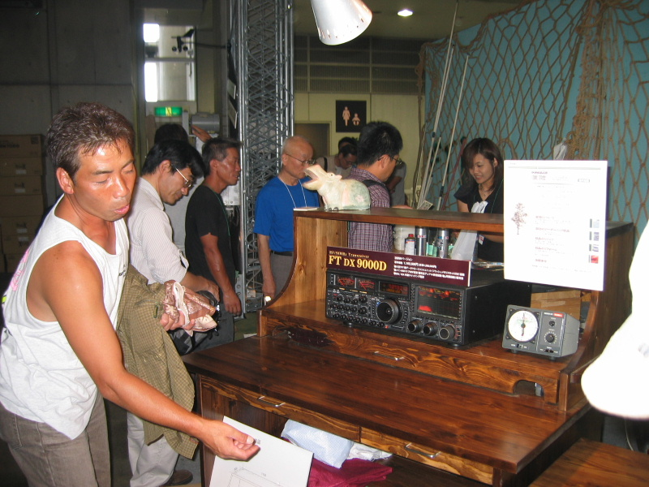
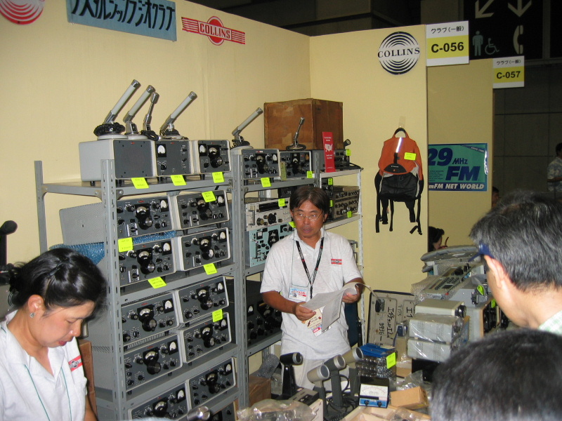
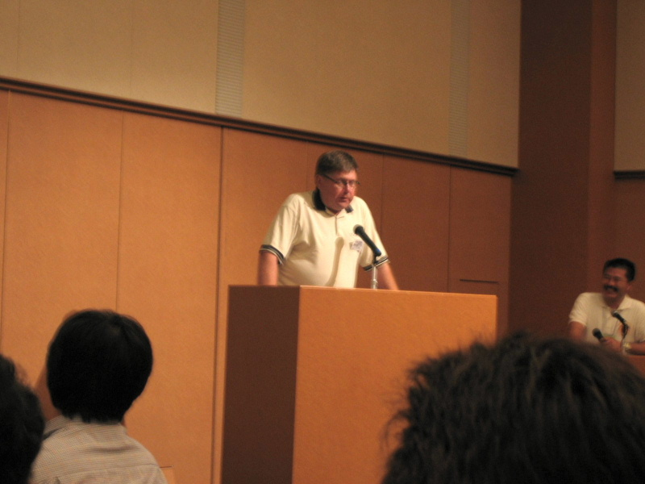
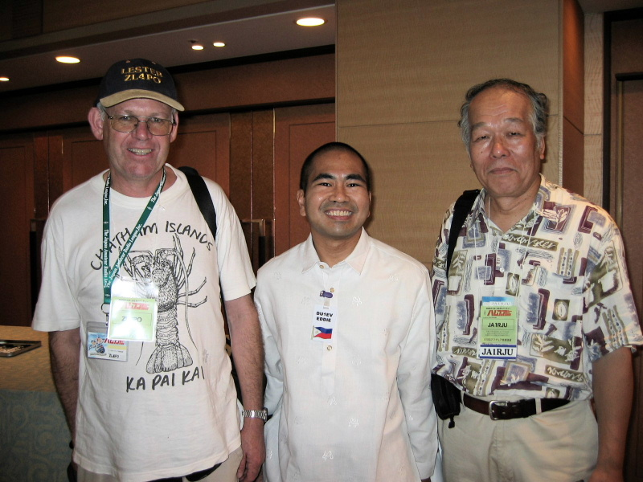
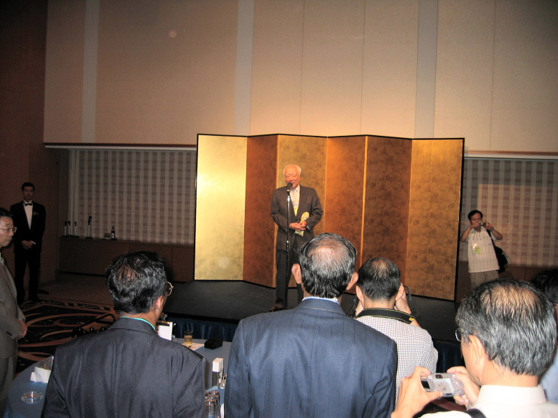
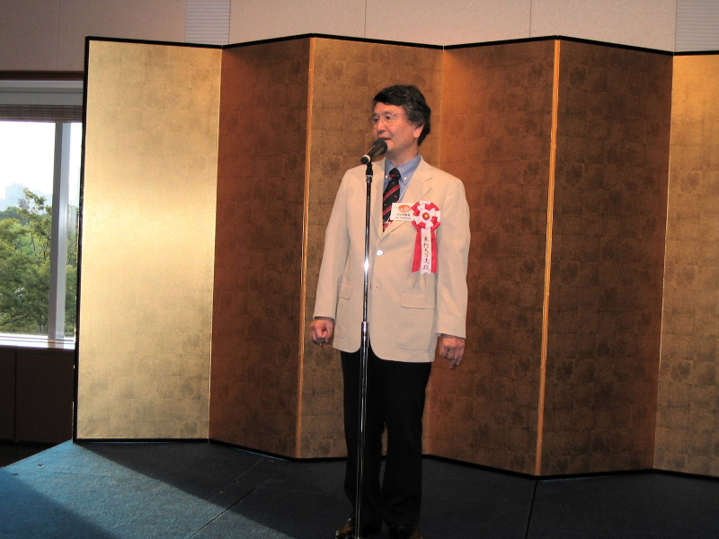
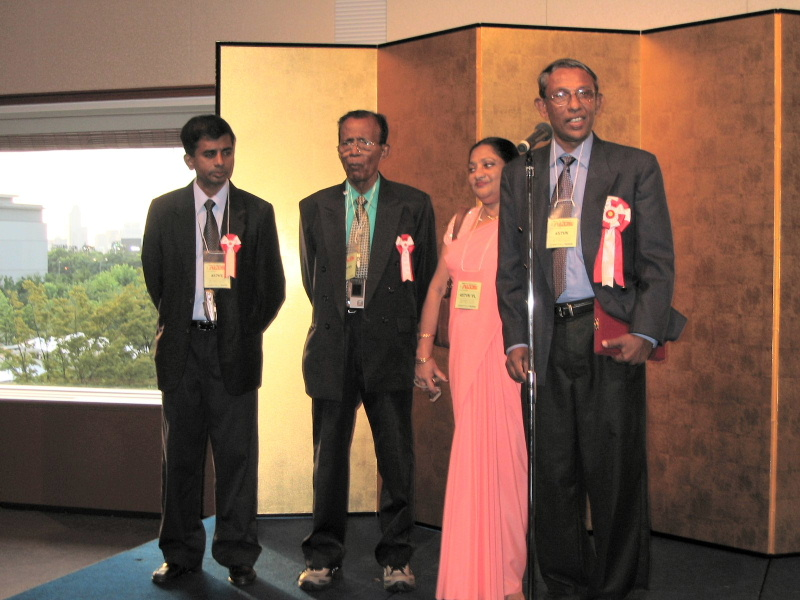
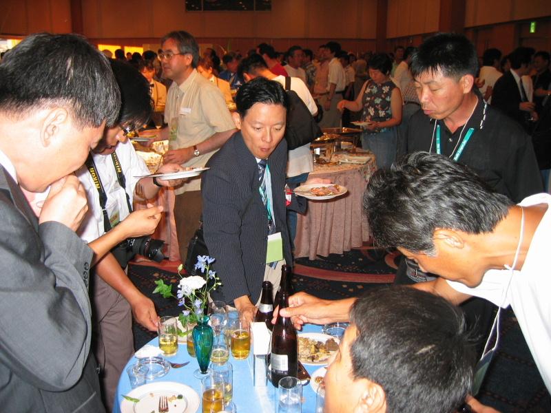
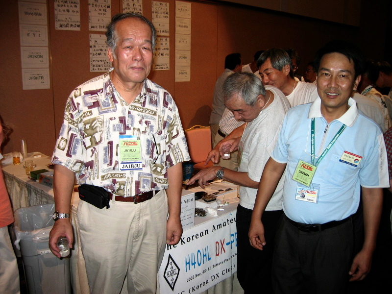
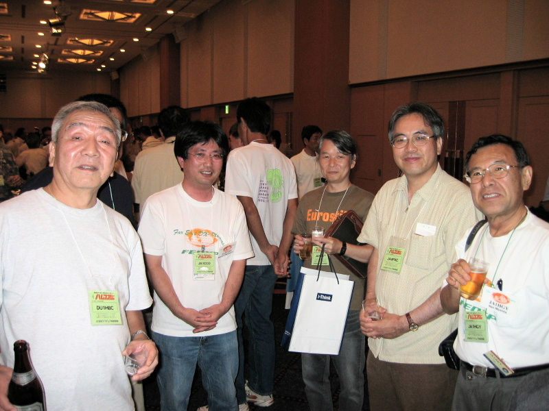

Ham Fair 2004
Ham Fair 2003
Ham Fair 2002
Ham Fair 2001
Ham Fair 2000
Ham Fair 1999
 |
Flash Newsへ |


恒例のハムフェアー「Japan DX Meeting 2005」の第一部DX'erの集いは、8月20日(土)15:15分から多くの海外からのゲストを迎え、
東京ベイ・有明ワシントンホテル3F(アイリスAホール)で開催された。
【第1部(フォーラム形式)DX'erの集い】
司会・進行 JK1OPL・小野彰彦
15:15 第1部 "開会の挨拶" JA1BRK・米村太刀夫
15:20 "5X1W・運用帰国報告" JA1DOT・小林久人
15:45 "FT DX-9000 技術講演" 株式会社・バーテックスタンダード・篠原氏
16:10 "特別講演" OH2BH・Martti Laine
16:30 第1部 "閉会の挨拶" JF1IST・藤原 仁
○ DXからの参加者：DU1EV.DU1HBC.HL1IWD.HL1KLP.HL2XIQ.DS2AGH.DS4EOI.6K2AVL
6K2DJM.OH2BH.ZL4PO.K9LA.AE9YL
|


| 今年もJARL主催の「JARL・ハムフェア2005アイボールQSOパーティー」と合流。 昨年大好評だった日本銘酒の川上酒店が今年も開店、飲み放題、食べ放題！。 |






|
Flash Newsへ |